|
|
|
|
|
From Galle to Salalah via the Maldives
26th March 2009 20 54.1N 037 09.7E Mahommed Qol, The Sudan
Greetings all.
Today’s the third day we’ve been stuck in this anchorage. There’s 25kts of northerly wind whistling through the rigging and we’re sheltered here. Outside of the anchorage, there’d be 35kts easily. The winds not so much the problem here in the Red Sea though – it’s the viscous steep short sharp waves – the flaming things are so close together, Hinewai never has a chance to come down from one and gently sail up the next – we'd come down over one and bury her nose in the next. It’s spectacular – sheets of spray being swept 20 feet either side of us, and over us, but does tend to stop you dead. Still, this is all part of life’s rich tapestry sailing the Red Sea.
But before we get to that, there’s heaps to catch up on. Our last email found us just leaving Galle in Sri Lanka having had that unplanned stop-over to repair the headsail furler.
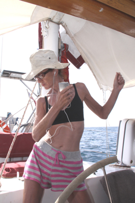
The trip over to Uligan was pretty
straight forward and only took us three days. Even the
winds were favorable.
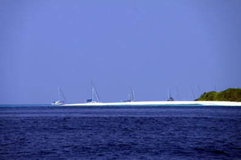
As we passed south of Uligan and came round to head north, we could see the anchorage was dotted with about 20 other yachts – we had heard on the radio there had been over 40 there a few days before – no idea where they all fitted. We passed through the fleet and anchored north of them all, calling up the authorities on Ch 16.
Before too long, a small fishing boat came out, full of smiling handsome young men, immaculately dressed in a range of uniforms and all uniformly displaying wide welcoming smiles. After the bad experience in Galle of the dishonestly of the Customs guy, they were a sight for sore eyes.
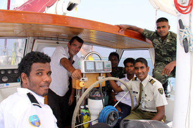 Hinewai’s cockpit is not the largest, but they all crammed into it and one by one came below with Peter to do all the usual paperwork. Meanwhile, Jean’s chatting away with the rest and even persuades them to pose for a photograph – the first officials we’ve met who allowed this. They also invited us all to a dinner the locals were putting on for the yachties that night.
Once they’d left, Martin and Wenda got the dinghy together and popped off to do some snorkeling while we caught up with a few of the yachts we knew on the radio. Then we all went ashore to track down the local agent, Imad Addhulla.
He turned out to be another spectacularly handsome young man, very early 20’s, very proud that he had managed to acquire the agent’s rights here and determined to offer the best service he could. And he did. He walked us around the town, showing us the important places (Customs, Immigration, his store).
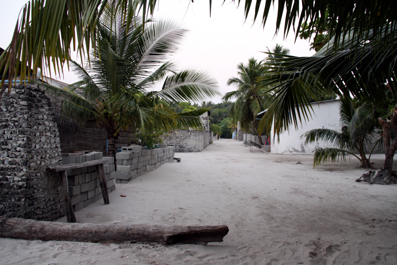 The town is tiny – only 300 people live on the island – with a fairly square based plan of wide dusty roads with white buildings offset behind tall walls, each building surrounded by palms and tall shrubs to provide shade. The people are staunchly Muslim and almost shy – they will smile at you when you greet them but offer no hint they’d like to chat. Even the kids were quiet, none of the usual “Hi Mister”. We were just part of this strange transient group who are only ever passing through.
The island’s going through some major change
– the southern half of it has been sold to developers and a
tall fence now stretches across the island stopping the
locals getting into the new resort that’s being built. The
locals
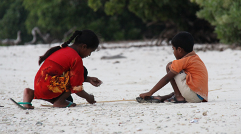 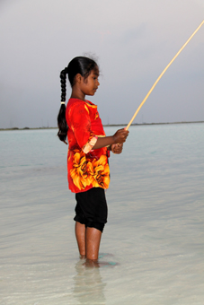
The kids, albeit quiet, are as lovely as ever. They have no television or video games so play their own games, or go fishing from the beach
That night, we popped ashore, finding a couple of outboard engine eating bombies on the way, and parked our dinghy on a fairly crowded beach. Heading inshore, we found an area of the beach behind Imad’s store turned into an open air room with palm fronds stuck into the sand. 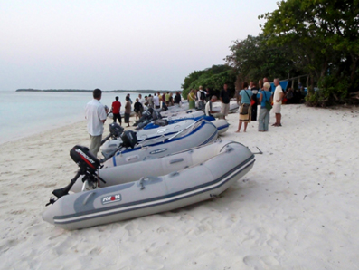 Around these “green walls” chairs had been set out, each with a coconut opened and ready to drink, while along the whitewashed wall of the back of the store a couple of trestle tables groaned with a selection of local dishes.
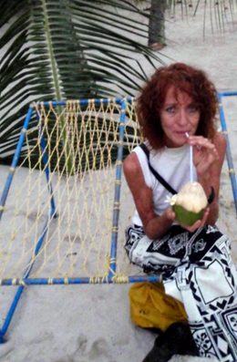 After the usual putting faces to voices you knew from the radio, and meeting the other yachties, we all loaded our plates and sat, a little self-consciously, balancing plates of food on our knees. Two young boys were circulating with jugs of black tea (“Sugar” and “No Sugar” – but they kept swopping jugs so we were never quite sure what we were getting).
Before the entertainment, Peter had a chance to chat with Imad for a few minutes. He explained that he and his friends put such events on each week for the yachties who were here – the food was prepared by their mothers. He claimed they enjoyed the events because it gave them a chance to meet all these different people, to learn about the world and to practice their languages – not just English, but Dutch, Norwegian, Swedish, French etc etc.
We’re sure that that is true because they did genuinely seem to be having as much fun as we were (and we’ve been to enough of these sort of do’s now to know when it’s JUST a job), but he did have the grace to say the money is very welcome as well. There were probably 45 of us there and at US$10 each, it’s a good slug of income to a group who at best might look forward to being fishermen (or waiters in the new development).
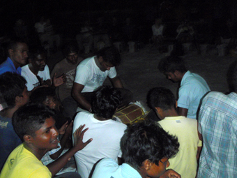 With the plates cleared away, the entertainment started. Imad and his friends produced a few drums and hunkered down on the same in front of us all. Imad pulled what looked like a tea-towel from his pocket and explained that the local form of dance was a mixture of the group and single dancer. The "group" because we were all part of it, the "single" because whoever held the tea-towel was the dancer for everyone’s edification. When the dancer tired, they could pass the tea towel to someone else who was then obliged to dance. At this, Peter and several other male yachties sunk low in their seats, trying to be as inconspicuous as possible – Jean, of course, is radiating body language that screams “Pick me, Pick me”.
They were kind to us at first, swopping the tea towel among themselves. The local style of dancing is a gentle cross between a Maori Hakka and hip hop – strong angular leg stomping moves with a fluidity of movement with the upper torso. Peter started to dig a slit trench in the sand with his feet.
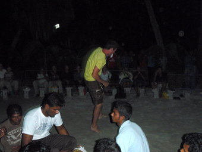 Then the tea towel started to circulate the yachties – suffice to say the women were generally excellent, the men looked awful – do yachtie men have NO sense of rhythm? (By now, Peter had lain down in his trench and was quietly pulling sand over himself).
After a couple of hours of this frivolity, the evening slowly drew to a close and we all headed back to our boats (we collected one of the bombies again). Another Pommy couple, Graham and Judy of Nomad Life, came back to Hinewai for a drink and we all sat and chatted under a full moon until the small hours.
The next day started with a leisurely breakfast and a short snorkel before we set to getting Hinewai ready for the long passage to Salalah in Oman. A pod of dolphins swam through the anchorage and we all leapt into the dinghy and positioned ourselves a hundred yards in front of them, drifting and hoping we might be able to slip over the side and swim with them. No such luck, the canny creatures got to within 20 yards of us, sounded and popped up a couple of hundred yards away.
Peter went ashore to do all the paperwork but found Customs had headed off to another island – borrowing the Custom’s office radio, he called them up and the Customs chap promised to call us when he got back – before finding Imad to confirm how much fuel we needed.
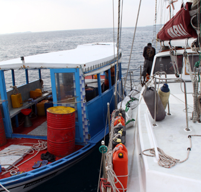
Mid afternoon, the “fuel barge” arrived – a
fishing boat crammed with 40lt plastic drums. The crew
looked suspiciously like the musicians and dancers from the
previous night.
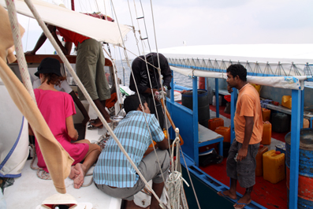
That evening, Jeans stayed aboard to “wash her hair” and write some emails while Peter dropped Martin and Wanda off on another German boat before heading on to Nomad Life to swop some books and consume a cleansing ale or few.
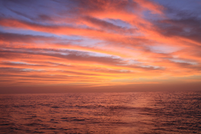 The next morning, having deflated and stowed the dinghy, we upped anchor around 10ish and followed a couple of other yachts out through the north passage of the atoll. We’d been in two minds about stopping at Uligan, but were so glad we had. Albeit only a short stop, it had been a truly gentle place where you felt you were welcomed as a friend, not just another target to be separated from their money – we so hope that won’t be spoilt when the hoards of tourists arrive with the new resort development – but from what we’ve seen elsewhere, that may be a bit of a pipe dream.
The Passage to Oman
Now we had to hunker down for the 1,500 nautical mile passage to Salalah in Oman, where we were due to join the Vasco da Gama Rally which had left Cochin in India in January.
We’d been working on our route while in
Galle, using what are called pilot books. Part of these are
diagrams of large chunks of sea, spilt down into squares,
each showing the historical breakdown of the wind and
current strengths and directions for every month of the year
– in other words, allowing you to 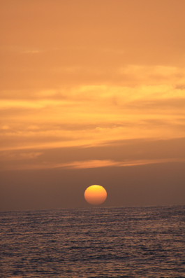
Using a large scale passage chart, we plotted our best point of sailing as suggested by the Pilots, and then joined up the dots. We found it suggested that a straight line was not the best way, but we should look at a gentle curve to the south. VPP appeared to agree.
But as it turned out, we were both wrong – after a couple of days of fickle winds, listening to yachts ahead of us and using the information Peter Coleman, a good friend from Melbourne, had been working on and sending us, we decided we were a couple of hundred miles too far south.
So we headed north and found the groove – almost perfectly paralleling our original plan, we had glorious reaching winds that carried us all the way to Salalah.
The Visit from The Whales Family
We’ve chatted before about life on passage on the Phuket to Galle page, and these days were no different. But we had one very special day.
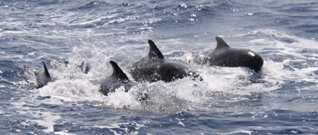
At about 10.45, Peter was on watch in the
cockpit updating the log, Jean was down below baking bread
and a cake and Martin & Wenda were catching up on some
sleep. All of a sudden, there was a loud bang from below
the water line - we'd hit something. Peter looked behind us
expecting to see another door or some other large piece of
rubbish that we've seen sadly too much of. Eye's wide, he
spun round to shout down the companionway 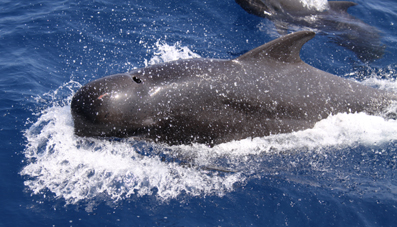
The other 3 came up like ferrets up a trouser
leg to have a look. There were over 30 whales all around us
- some playing in the bow wave, others alongside us, others
just following in our wake - all of them coming well out of
the water with loud whooshing noises as they breathed - down
below we could hear their squeaks and chirps. They weren't
the huge whales, but still pretty big - a good 10 to 15 feet
or more long, black with very round heads and "faces" with a
hint of a beak
or
lips (we think they may have been "Pilot whales").
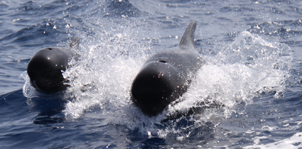
Then about 20 feet off the starboard beam, a solitary dolphin shot straight out of the water to his full length, standing on his tail and slowly spinning round to "back flop" into the sea. He did this half a dozen times - almost as if to say "Hey, don't forget us dolphins!" - and then was gone.
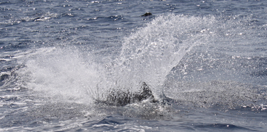 The whales were with us for over 30 minutes - an incredible, special experience. They showed none of the playful leaps and turns we’ve got used to with the dolphins, mostly simply swimming along side us although a few came round to the bow to play in the pressure wave. And a couple gently nudged us again (“THUD”). We doubt these nudges were accidental – we wonder whether our black painted undersides looked like some large strange whale to them and they were curious to see how we felt????
Then sadly, almost as if a switch had been thrown, they all turned away together and were gone.
But that wasn’t the end of the day’s excitement. A couple of hours later, a milestone. At 13.11 boat time, we hit 10,000nm (c.14,000 miles, 18,000kms) since we left Melbourne.
Arriving in Salalah – the new sub-continent of Asia Minor
After nine days, we knew we were getting close to our arrival in Salalah, Oman. Not just because the charts were telling us this, but also because the air became full of fine dust and sand as the horizon took on a yellow tinge. This was the remains of a full blown sandstorm that we had heard a couple of the yachts a little way ahead of us talking about. For two days, they’d not only had strong winds, but visibility cut to a couple to hundred yards. And this was over 100 miles off-shore still. We were glad we’d missed the worst – down below we had this patina of dust everywhere – the others must have been shoveling it out.
Whenever you approach a new port, you have to call up the Port Controllers on Ch 16 and request permission of enter. Usually, you get clearance to come straight in, but this time we were asked to wait until two other ships had exited the port so we had to hang around near to the furthest channel mark for a couple of hours – and they dragged.
The first ship was just yet another large container ship, but the second was a UK frigate – escorted out by a couple of RIBs to make sure nothing came too close. Not sure which ship she was, but she’s were there for refueling as part of the Coalition of ships protecting merchant shipping from the Somali pirate menace.
As ever, whenever a warship comes past, Jean popped down to our stern and dipped our Colours in salute. As ever, we were completely ignored.
As we motored down past the new container port to the old harbour where yachts are parked, Port Control came back on the radio and instructed us to anchor between a couple of other yachts. The old harbour was crammed with yachts joining the Vasco da Gama rally and we weren’t that happy where we were being asked to go – it was too cluttered and we’d have had no swinging room. However, a few yachts had Med moored against the old breakwater and, with the Port Control’s permission, we prepared to do the same.
They got a little miffed with us as we
drifted back through the anchorage taking our time getting
everything ready, but this was going to be our first try at
Med mooring – it’s where you start to reverse back to the
wall, drop your anchor controlling the direction of
Hinewai through keeping pressure on the anchor until you
can get two lines ashore from the stern. With these and
the anchor chain tightened up, you should be as secure as a
bug in a rug. 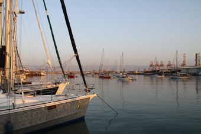
Those of you who know Hinewai will remember that she tends to go where she wants to when going astern – sometimes surprising us when this happens to be where we want her to go. This time, she was lovely, dropping back perfectly until Jean was able to leap into another yacht's dinghy who’d come over to help and take the first line shore. With that tied off, we were secure but still ran another couple of lines back to be totally sure, sat back, turned the engine off and cracked open a few beers to celebrate the end of the passage.
In the 13 days since leaving Galle, we had travelled 1,788 nautical miles – our longest single passage to date. Since leaving Langkawi on the 19th January, we had covered 3,055 nautical miles at an average speed of 6.4 knots – we were delighted with how the Big Girl had performed.
Martin and Wenda were going to be leaving us here. They had met a German yacht in the Maldives who was planning a more leisurely trip up the Red Sea than we were so had decided to jump ship. We were sorry to see them go, and were grateful for all their help in crossing the Indian Ocean – if anyone’s looking for crew, they’d be a grand choice.
Now we were joining the Vasco da Gama Rally, our first real rally, to travel in company to Turkey. But first, we had a few days in Salalah – but we’ll chat about that and our trip through the Pirate Alley of the Gulf of Aden in our next email.
Hugs
Peter & Jean
Next Log Page: From Salalah to Aden - Pirate Alley
|
|
|
|
|
|
|
|
The Crew The Route The Yacht The Log Guestbook Links Contact Us |
|
|
|
|
|
Home |
|
|
All Original Content of this Web Site Copyright © 2000, 2001, 2002, 2003, 2004, 2005, 2006, 2007, 2008, 2009 Ocean Odyssey Pty Ltd |